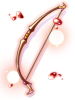

Illusion of Luanda (Español)
Quest Principal
| Requisitos | |
|---|---|
| Nivel Base: | 160 |
| Lugar de Inicio: | beach_dun2 245/251 |
| Recompensas | |
| Experiencia: | None |
- Para ingresar a Illusion of Luanda, haz click en la luz que se encuentra en (
beach_dun2 245/251) y selecciona Investigate. Puedes llegar fácilmente acá usando Warper > Illusion Dungeons > Illusion of Luanda. - Habla con Defense Officer Luanda en (
com_d02_i 241/255).
Has desbloqueado todas las Quest Diarias de Illusion of Luanda.


Quests Diarias
Todas las Quest diarias se piden del Bulletin Board ubicado en com_d02_i 238/266 sobre el Defense Officer Luanda.

Proof of Megalith Extermination
| Requisitos | |
|---|---|
| Nivel Base: | 160 |
| Lugar de Inicio: | com_d02_i 238/266 |
| Recompensas | |
| Experiencia: | 107,500,000 (Base) y 70,000,000 (Job) |
| Items: | 3  Illusion Stones (custom) Illusion Stones (custom)
|
- Haz click en Bulletin Board y elige [Daily] Proof of Megalith para aceptar la quest.
- Necesitarás recolectar 3
 Tokens of Bigstone que son drop de la siguiente mob:
Tokens of Bigstone que son drop de la siguiente mob:
- Ancient Tri Joint
- Ancient Stalactic Golem
- Ancient Megalith
- Ancient Tao Gunka
- Regresa con Defense Officer Luanda para recibir tu recompensa.
Proof of Wootan Extermination
| Requisitos | |
|---|---|
| Nivel Base: | 160 |
| Lugar de Inicio: | com_d02_i 238/266 |
| Recompensas | |
| Experiencia: | 107,500,000 (Base) y 70,000,000 (Job) |
| Items: | 3 Illusion Stones (custom)
|
- Haz click en Bulletin Board y elige [Daily] Proof of Wootan Extermination para aceptar la quest.
- Necesitarás recolectar 3
 Tokens of Wootan que son drop de la siguiente mob:
Tokens of Wootan que son drop de la siguiente mob:
- Ancient Stone Shooter
- Ancient Wootan Shooter
- Ancient Wootan Fighter
- Ancient Wootan Defender
- Regresa con Defense Officer Luanda para recibir tu recompensa.
Megalith Hunt
| Requisitos | |
|---|---|
| Nivel Base: | 160 |
| Lugar de Inicio: | com_d02_i 238/266 |
| Recompensas | |
| Experiencia: | 107,500,000 (Base) y 70,000,000 (Job) |
| Items: | 3 Illusion Stones (custom)
|
- Haz click en Bulletin Board y elige [Daily] Megalith Hunt para aceptar la quest.
- Necesitas cazar los siguientes monstruos:
- 5 Ancient Tri Joint
- 5 Ancient Stalactic Golem
- 5 Ancient Megalith
- Regresa con Defense Officer Luanda para recibir tu recompensa.
Wootan Hunt
| Requisitos | |
|---|---|
| Nivel Base: | 160 |
| Lugar de Inicio: | com_d02_i 238/266 |
| Recompensas | |
| Experiencia: | 107,500,000 (Base) y 70,000,000 (Job) |
| Items: | 3 Illusion Stones (custom)
|
- Haz click en Bulletin Board y elige [Daily] Wootan Hunt para aceptar la quest.
- Necesitas cazar los siguientes monstruos:
- 5 Ancient Stone Shooter
- 5 Ancient Wootan Shooter
- 5 Ancient Wootan Fighter
- Regresa con Defense Officer Luanda para recibir tu recompensa.
Quests de Historia
| Requisitos | |
|---|---|
| Nivel Base: | 160 |
| Lugar de Inicio: | Varios |
| Recompensas | |
| Experiencia: | 28,000,000 (Base) y 16,250,000 (Job) |
| Items: | Ninguno |
Cada 3 horas, dos vortex negros aparecerán en el mapa en ubicaciones al azar. Para proseguir con las Quest de historia, debes hablar con estos NPC en orden. Estas Quests son opcionales y solo otorgan experiencia. Son fragmentos del pasado que te permitirán aprender mas sobre la historia de Luanda. La ubicación de cada Vortex está indicada en la imagen de la derecha.

Historia 1
- Ve a cualquier Vortex activo en el mapa y dale click. Has identificado un extraño fenómeno ocurriendo alrededor del dungeon.
- Regresa con Defense Officer Luanda.
Historia 2
- Ve al Vortex 1.
- Habla con Second Young Man. Te has encontrado con los tres hermanos: Mao, Karu y Luanda. Están a punto de comenzar una cacería!
- Habla con Second Young Man de nuevo. Te dice que debes abandonar este lugar antes de que un terrible suceso ocurra.
- Regresa con Defense Officer Luanda.

Historia 3
- Ve al Vortex 2.
- Habla con Karu. Está en una cita con Ahsemem y acabas de interrumpirla.
- Regresa con Defense Officer Luanda.

Historia 4
- Ve al Vortex 3.
- Habla con Young Man. Aprendes mas sobre la razón por la cual Luanda está pintando en las paredes de las cavernas. Tuvo un sueño donde el pueblo se incendió después de que unos monstruos invadieran el área.
- Regresa con Defense Officer Luanda.

Historia 5
- Ve al Vortex 4.
- Habla con Young Man. Te encuentras con Mao practicando sus habilidades mentales.
- Regresa con Defense Officer Luanda.

Historia 6
- Ve al Vortex 5.
- Habla con Young Man. Agarró algo del agua.
- Regresa con Defense Officer Luanda.

Historia 7
- Ve al Vortex 1.
- Habla con Village Chief. El pueblo está bajo ataque, pero los hermanos no están ahí para defenderlo.
- Regresa con Defense Officer Luanda.

Historia 8
- Ve al Vortex 6.
- Habla con Third Young Man. El y sus hermanos sienten el olor a sangre proveniente del pueblo y deciden regresar inmediatamente.
- Regresa con Defense Officer Luanda.

Historia 9
- Ve al Vortex 2.
- Habla con Karu. Karu perdió a su esposa tras el incidente en el pueblo.
- Regresa con Defense Officer Luanda.

Historia 10
- Ve al Vortex 7.
- Habla con Dark Shadow (la de la derecha). Descubres quien es el responsable detrás de estos ataques y el misterioso poder que se encuentra dentro del poblado.
- Regresa con Defense Officer Luanda.

Daily Quest Reset

Como mecánica exclusiva de NovaRO, puedes reiniciar los cooldowns de tus daily quests.
Esto significa que eres capaz de farmear cuantas Illusion Stones quieras con un único personaje, sin necesidad de crear personajes adicionales para evitar los cooldowns de las quests.
Para reiniciarlos, habla con Osmundi. Puedes encontrarlo dentro de cada Illusion Dungeon en las siguientes ubicaciones:
- Illusion of Moonlight .
- Illusion of Vampire .
- Illusion of Frozen .
- Illusion of Abyss .
- Illusion of Teddy Bear .
- Illusion of Luanda .
- Illusion of Labyrinth .
- Illusion of Underwater .
Los reinicios se separan en 3 categorías distintas acorde al grupo de dificultad en que cada dungeon se encuentra. Cada reset te recompensará con una cantidad determinada de Illusion Stones:
- Categoría 1: Illusion of Moonlight, Illusion of Vampire e Illusion of Frozen.
- Recompensa al resetear: 12 Illusion Stone
- Recompensa al resetear: 12
- Categoría 2: Illusion of Abyss, Illusion of Teddy Bear e Illusion of Underwater - Primer Piso.
- Recompensa al resetear: 18 Illusion Stone
- Recompensa al resetear: 18
- Categoría 3: Illusion of Luanda, Illusion of Labyrinth e Illusion of Underwater - Segundo Piso.
- Recompensa al resetear: 24 Illusion Stone
- Recompensa al resetear: 24
El primer reinicio del día, para cada grupo, te otorgará 6 Illusion Stone adicionales.
Una vez completes las dailies de cualquiera de las categorías de arriba, puedes reiniciar las daily quest de dicha categoría. Tras reiniciarlas, las quests no volverán a dar mas experiencia hasta que haya transcurrido el tiempo para su reinicio normal.
Cada categoría puede ser completada y reiniciada por separado, pero no puedes reiniciar las dailies de un Illusion Dungeon en particular sin haber completado las otras dailies de su respectiva categoría.
Mob Spawn

Los monstruos en esta área se dividen en dos clanes: el Clan Wootan y el Clan Megalith. Solo puedes luchar contra un clan a la vez, por lo que si el Clan Megalith se encuentra activo en el mapa, solo verás los siguientes monstruos:
- Ancient Tri Joint
- Ancient Stalactic Golem
- Ancient Megalith
Por otro lado, si el Clan Wootan se encuentra activo, encontrarás esta mob en el mapa:
- Ancient Stone Shooter
- Ancient Wootan Shooter
- Ancient Wootan Fighter
Tras matar 1500 mobs de un Clan, aparecerá uno de los dos MVP Ancient Tao Gunka o Ancient Wootan Defender dependiendo del clan que se encuentre activo en ese momento. Tras derrotar al MVP de un Clan, toda la mob del mapa rotará a la del otro Clan.
Mob
Megalith Clan
| Imagen | Monstruo | Nivel | HP | Tamaño / Raza / Elemento |
|---|---|---|---|---|

|
Ancient Tri Joint | 164 | 694,500 | Small / Insect / Earth 1 |

|
Ancient Stalactic Golem | 167 | 725,400 | Large / Formless / Neutral 4 |

|
Ancient Megalith | 166 | 708,500 | Large / Formless / Neutral 4 |

|
169 | 19,280,000 | Large / Demon / Neutral 3 |
Wootan Clan
| Imagen | Monstruo | Nivel | HP | Tamaño / Raza / Elemento |
|---|---|---|---|---|

|
Ancient Stone Shooter | 166 | 692,500 | Medium / Plant / Fire 3 |

|
Ancient Wootan Shooter | 164 | 702,100 | Medium / Human / Earth 2 |

|
Ancient Wootan Fighter | 167 | 725,500 | Medium / Human / Fire 2 |

|
 Ancient Wootan Defender |
169 | 20,154,000 | Large / Human / Fire 4 |
Cartas
| Carta | Va en: | Efecto |
|---|---|---|
| Arma |
ATK +30. | |
| Garment |
MaxHP +150. | |
| Arma |
MATK +30. | |
| Garment |
Incrementa el daño crítico en 1% y la velocidad de ataque en 1% (reduce el delay after attack en 1%) por cada 10 puntos de LUK base. Si la LUK base es igual o mayor a 120, incrementa el daño crítico en 5% adicional. | |
| Garment |
Incrementa el daño de Bows en 1% y la velocidad de ataque en 1% (reduce el delay after attack en 1%) por cada 10 puntos de DEX base. Si la DEX base es igual o mayor a 120, ATK +40. | |
| Arma |
Incrementa el daño crítico un 10%. | |
| Headgear |
Ignora en un 30% la defensa de los monstruos de tipo Boss. | |
| Escudo |
Reduce el daño físico recibido de los monstruos de tipo Boss un 30%. |
Equipo
Cerca de la entrada encontrarás a Village Soap Artisan (com_d02_i 234/266). El se encarga de fabricar los Objetos Illusion de este dungeon.
Para cada objeto, te pedirá Illusion Stones, un Equipo Base (que puede requerir cierto nivel de refine) y objetos varios que caen por drop dentro del dungeon.
Aquí puedes encontrar los objetos que puedes crear, su efecto y que piden para ser fabricados:
| Imagen | Nombre | Descripción | Creación |
|---|---|---|---|

|
 Illusion Tablet Illusion Tablet
|
Incrementa el daño físico contra monstruos de propiedad Shadow, Undead, Poison y Ghost en 10%.
Incrementa la velocidad de ataque en 8% (reduce el after attack delay en 8%).
Ataque: 170 Peso: 80 Nivel del Arma: 4 Nivel Mínimo: 100 Equipable por: Sage classes, Priest classes, Star Gladiator classes. |
|
|  |  Illusion Hunter Bow [2] Illusion Hunter Bow [2]
|
Cuando está equipado con
ATK +10%. [Hunter's Sight] ATK +100, incrementa el daño crítico un 15%, incrementa el daño físico contra monstruos de raza Insect y Brute un 50%.
Ataque: 165 Peso: 150 Nivel del Arma: 4 Nivel Mínimo: 120 Equipable por: Ranger. |
|

|
 Illusion Goibne's Helm [1] Illusion Goibne's Helm [1]
|
VIT +3, MDEF +3. Si el nivel de refine es igual o mayor a 7, VIT +5.
VIT +5, Max HP +15%, Max SP +5%, DEF +5, MDEF +15.
Defensa: 25 Location: Upper Peso: 100 Nivel Mínimo: 130 Equipable por: Todos excepto Novice. |
|
 Illusion Goibne's Armor [1] Illusion Goibne's Armor [1]
|
Max HP +10%.
Defensa: 158 Peso: 350 Nivel del Arma: 4 Nivel Mínimo: 130 Equipable por: Todos excepto Novice. |
100 Solid Clays | |
 Illusion Goibne's Greaves [1] Illusion Goibne's Greaves [1]
|
Max HP +5%, Max SP +5%. Si el nivel de refine es igual o mayor a 7, reduce el tiempo de casteo variable un 5%. Si el nivel de refine es igual o mayor a 9, incrementa el daño de rango físico un 10%.
Defensa: 42 Peso: 120 Nivel Mínimo: 130 Equipable por: Todos excepto Novice. |
| |

|
 Illusion Goibne's Spaulders [1] Illusion Goibne's Spaulders [1]
|
VIT +1, MDEF +2.
Defensa: 47 Peso: 100 Nivel Mínimo: 130 Equipable por: Todos excepto Novice. |
|

 +7
+7  100
100 

 50
50  50
50  +7
+7  7
7  +7
+7  +7
+7  100
100  +7
+7